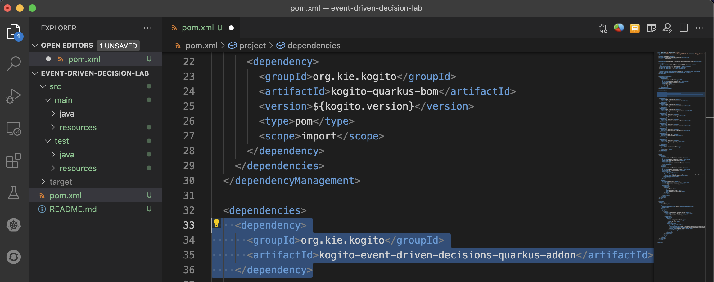
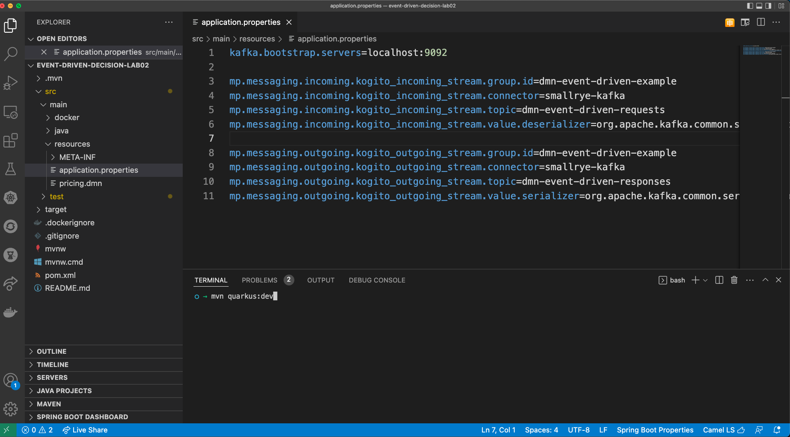
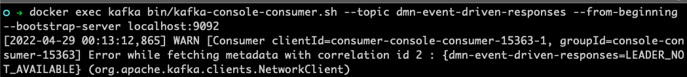

Event Driven Decision Services
This lab introduces you to the concept of event-driven decision services. In other words, we’ll work with services that can process the decisions based on events that are published to specific topics, and that can publish the decision response also via events. This type of service matches very well the popular event-driven architecture, allowing the business logic to be decoupled and independent of other services.
Prepare the messaging backbone
Kafka is an open-source even streaming platform, and currently, one of
the most popular tools. In event-driven architectures, the Kafka
topics are used as the communication layer in between the services.
Each service can now be considered a consumer or a producer, in other
words, each service can publish or consume events to/from the topics.
Red Hat supports the integration between RHPAM and AMQ Streams (Kafka). To follow the labs, you should have an accessible Kafka server. The Kogito Engine (decision engine) will communicate with the topics that we will create in the Kafka server. When working with event-driven applications, you will have decoupled decision services that can react to certain events and publish the result of the decision back in form of events.
In this step, we will set up a Kafka environment in your local environment using Docker. If you already have a local Kafka broker and you want to use it, that is totally fine!
IMPORTANT: When using AMQ Streams (Kafka) in OpenShift, a secure
communication is required in between the client applications and the
Kafka broker. Extra configurations in the client applications like
kafka.sasl.mechanism, kafka.security.protocol,
kafka.sasl.jaas.config and kafka.sasl.login.callback.handler.class
are not needed when TLS communication is not enabled.
Setting up a local Kafka environment using Docker
-
In your local machine, access the enablement’s base folder:
$ cd ~/enablement -
Clone the repository containing the docker files we need:
$ git clone https://github.com/hguerrero/amq-examplesThe docker-compose file available in this quickstart should bootstrap everything you need to have your Strimzi up and running: Zookeeper, Kafka server v2.5.0, Apicurio Registry and a Kafka Bridge.
-
Access the
amq-examples/strimzi-all-in-one/folder:$ cd amq-examples/strimzi-all-in-one/ -
Start the Kafka environment:
docker compose up
The necessary images will be downloaded and the containers should be up
and ready for you to use in a couple of minutes. In order to stop the
environment, you can hit ctrl+c. Whenever you want to start it, just
navigate to the directory
~/enablement/amq-examples/strimzi-all-in-one/ and run the
docker compose up command.
Creating an event-driven decision project
Let’s create a new project to work with our event-driven decision project. Kogito applications can be created either for Quarkus or SpringBoot runtimes. In this lab, we will use a Maven archetype to generate a Quarkus based project with the required dependencies for our Kogito decision application.
-
Navigate to a folder of your preference, and run the following command. Maven will create a new project with the name
event-driven-decision-lab.$ mvn archetype:generate \ -DarchetypeGroupId=org.kie.kogito \ -DarchetypeArtifactId=kogito-quarkus-dm-archetype \ -DgroupId=org.acme -DartifactId=event-driven-decision-lab \ -DarchetypeVersion=1.5.0.redhat-00004 \ -Dversion=1.0-SNAPSHOT -
Open the project in VSCode so we can start adding the required configurations. Notice that this project already brings a sample DMN
Traffic Violation.dmn.$ code event-driven-decision-lab/
-
In order to natively work with Kafka topics without the need of adding extra code we can use one of the Kogito Add Ons, the Kogito Event Driven Decisions Add-on. This add on allows our decision service to subscribe to Kafka topics, and trigger specific decisions based on the event inputs. It also allows our service to publish the result of the executed decisions to a Kafka topic. So, to get started, let’s add this extension to the service we’ve just created by adding it to the
pom.xmlfile. TIP: Since we are using thekogito-quarkus-bomMaven can infer the right version to use from the parent bom.<dependency> <groupId>org.kie.kogito</groupId> <artifactId>kogito-event-driven-decisions-quarkus-addon</artifactId> </dependency>
-
The Kogito event driven add-ons uses SmallRye under the covers. So we also need to add this dependency to the project:
<dependency> <groupId>io.quarkus</groupId> <artifactId>quarkus-smallrye-reactive-messaging-kafka</artifactId> </dependency>
We now have a decision project with a sample DMN and the required dependencies.
Configuring the Decision service
Instead of creating a middle layer (`glue code'') in our app to
integrate our decision with Kafka topics, all we need to do is add the
respective configurations to the `application.properties file. In this
lab we are using Quarkus, and under the hoods, our decision service will
make use of the its Microprofile Reactive Messaging add-on, SmallRye.
INFO: SmallRye Reactive Messaging is a framework for building event-driven, data streaming, and event-sourcing applications using CDI. It lets your application interaction using various messaging technologies such as Apache Kafka, AMQP or MQTT. The framework provides a flexible programming model bridging CDI and event-driven. SmallRye Reactive Messaging is an implementation of the Eclipse MicroProfile Reactive Messaging specification 1.0.
The required configurations for the service will be done in the
application.properties file.
-
In VSCode, open the file
src/main/resources/applications.propertiesand add the following configuration:mp.messaging.incoming.kogito_incoming_stream.group.id=dmn-event-driven-example mp.messaging.incoming.kogito_incoming_stream.connector=smallrye-kafka mp.messaging.incoming.kogito_incoming_stream.topic=dmn-event-driven-requests mp.messaging.incoming.kogito_incoming_stream.value.deserializer=org.apache.kafka.common.serialization.StringDeserializer mp.messaging.outgoing.kogito_outgoing_stream.group.id=dmn-event-driven-example mp.messaging.outgoing.kogito_outgoing_stream.connector=smallrye-kafka mp.messaging.outgoing.kogito_outgoing_stream.topic=dmn-event-driven-responses mp.messaging.outgoing.kogito_outgoing_stream.value.serializer=org.apache.kafka.common.serialization.StringSerializer
About these properties:
-
The configurations for incoming, are respective to the topic this Kogito service will subscribe to listen to events;
-
The configurations for outgoing, are respective to the topic this Kogito service will publish the result of the processed decisions to;
-
In Process Automation 7.11.x (based on Kogito 1.5.x), the Kogito runtimes expect the channel names to be
kogito_incoming_streamandkogito_outgoing_stream. -
For the incoming and outgoing streaming topic, we need to configure the group id, connector type, topic name, serializer and deserializer where (according to the SmallRye framework documentation):
-
group.id: A unique string that identifies the consumer group the application belongs to. If not set, a unique, generated id is used; -
topic: The consumed / populated Kafka topic. -
connector: The SmallRye connector we want to use in this streaming resource. -
serializer/deserializer: Sets the (Kafka) serializer/deserializer to write/read the record’s value.
-
Testing the Decision Service
So far, you should have:
-
A decision application with the Kogito Event Driven Add-on and SmallRye dependencies;
-
Application properly configured to listen to the topic
dmn-event-driven-requestsand to publish to the topicdmn-event-driven-responses; -
Kafka up and running;
-
Decision Service up and running;
Now, let’s test the application.
-
In VScode, open the integrated terminal (Use
cmd+shift+porctrl+shift+pand search for Create new integrated terminal); -
Start the decision service in dev mode:
$ mvn quarkus:dev
Your application is now subscribed to the topic
dmn-event-driven-requests and ready to process the decisions! Let’s
see how the expected event looks like.
To test our app, we will publish an event to the
dmn-event-driven-requests topic, and will monitor the
dmn-event-driven-responses to confirm that the application will post
the result of the decision processing also via events. Kafka brings two
CLI tools that will be very helpful in our lab, the
kafka-console-producer.sh and the kafka-console-consumer.sh.
These are the steps we’ll now follow to test our decision service:
-
In terminal, start a Kafka consumer to listen to every event in the topic
dmn-event-driven-responses -
In another terminal tab, start a Kafka producer to emitt an event to the
dmn-event-driven-requests; -
Check the consumer to confirm the decision response was published in the
dmn-event-driven-responsestopics;
So let’s get started.
-
In a new terminal tab, let’s use the Kafka consumer CLI tool that is available in the Kafka container:
-
$ docker exec kafka bin/kafka-console-consumer.sh --topic dmn-event-driven-responses --from-beginning --bootstrap-server localhost:9092TIP: If you see a WARN message containing the message
{dmn-event-driven-responses=LEADER_NOT_AVAILABLE}, it is fine! It means that the topic that we’re trying to consume still did not exist. When allowed by the Kafka broker, the Kogito decision service can automatically create the topics when needed.
-
We will now publish a message to the topic
dmn-event-driven-requests. Open another terminal tab and start the kafka console publisher:$ docker exec kafka bin/kafka-console-producer.sh --topic dmn-event-driven-requests --bootstrap-server localhost:9092 -
Now, we will send an event with the inputs to make a decision about traffic violation (should the driver be suspended?). Copy the payload below and send as an input to the producer:
{"specversion": "1.0", "id": "a89b61a2-5644-487a-8a86-144855c5dce8", "source": "SomeEventSource", "type": "DecisionRequest", "subject": "TheSubject", "kogitodmnmodelname": "Traffic Violation", "kogitodmnmodelnamespace": "https://github.com/kiegroup/drools/kie-dmn/_A4BCA8B8-CF08-433F-93B2-A2598F19ECFF", "data": {"Driver": {"Age": 25,"Points": 13},"Violation": {"Type": "speed","Actual Speed": 115,"Speed Limit":100}}}
-
Switch to the terminal tab where you started the consumer CLI. Confirm you got the decision result:

What just happened?
-
You have created a Kogito project that is based on Quarkus.
-
You added the dependency to the Kogito Event Driven Decisions add-on that relies on the SmallRye Messaging framework, so you also added its dependency.
-
The project you created already has the decision Traffic Violation that is based on the DMN specification, so we could start testing the eventing capabilities with it.
-
You started the project using Quarkus dev mode. In this mode you can make use of the hot reload capabilities while working in the code and also in the business assets like. If you package the application using JVM or Native modes, you should be able to get the same functionalities. (Native execution is not supported in Process Automation 7.11)
-
When started, the decision service created the topic
dmn-event-driven-requestssince it didn’t exist yet. -
You used Kafka CLI tools to subscribe to the topic
dmn-event-driven-responsesso you could see the result of the decision execution. -
You sent an event to the topic
dmn-event-driven-requests. Since the decision service is subscribed to it and the event details matches the expected payload for a decision, Kogito identified the decision to be triggered and processed it, next, it posted the decision result to thedmn-event-driven-responsestopic. -
The Kafka consumer tool captured the result event and showed you the resulting payload.
Now, let’s understand about the data payload.
The payload expected by the Kogito add on must follow the CloudEvents 1.0 specification.
{
"specversion": "1.0",
"id": "a89b61a2-5644-487a-8a86-144855c5dce8",
"source": "SomeEventSource",
"type": "DecisionRequest",
"subject": "TheSubject",
"kogitodmnmodelname": "Traffic Violation",
"kogitodmnmodelnamespace": "https://github.com/kiegroup/drools/kie-dmn/_A4BCA8B8-CF08-433F-93B2-A2598F19ECFF",
"data": {
"Driver": {
"Age": 25,
"Points": 13
},
"Violation": {
"Type": "speed",
"Actual Speed": 115,
"Speed Limit": 100
}
}
}-
According to the CloudEvents specification:
-
specversion: The version of the CloudEvents specification which the event uses. -
id: Identifies the event; -
source: Identifies the context in which an event happened; -
type: This attribute contains a value describing the type of event related to the originating occurrence; -
subject: describes the subject of the event in the context of the event producer (identified bysource).
-
-
We also need to specify some information about which decision we want to trigger:
-
kogitodmnmodelname: Name of the DMN model; -
kogitodmnmodelnamespace: Namespace of the DMN model to be triggered. Can be found in the DMN model properties panel. -
data: The input data expected by the DMN model to be used in the decisions evaluation.
-
The image below shows the DMN model name, namespace and data inputs:

On the output, we can see the CloudEvents pattern in the event payload,
and in the data field we can find the result of the decision nodes
Fine and Should the driver be suspended?, along with the input data
that was used to get to this decision.
{
"specversion": "1.0",
"id": "8bc58660-ce25-40ee-86cf-ae6a163510fd",
"source": "http://localhost:8080/Traffic+Violation",
"type": "DecisionResponse",
"subject": "TheSubject",
"kogitodmnmodelnamespace": "https://github.com/kiegroup/drools/kie-dmn/_A4BCA8B8-CF08-433F-93B2-A2598F19ECFF",
"kogitodmnmodelname": "Traffic Violation",
"data": {
"Violation": {
"Type": "speed",
"Speed Limit": 100,
"Actual Speed": 115,
"Code": null,
"Date": null
},
"Driver": {
"Points": 13,
"State": null,
"City": null,
"Age": 25,
"Name": null
},
"Fine": {
"Points": 3,
"Amount": 500
},
"Should the driver be suspended?": "No"
}
}See on the image below the two decision nodes:

Going further
Congratulations, you’ve implemented an event-driven decision service! If you are interested in learning and trying even more, here are some suggestions:
-
Try out the hot reload capabilities of DMN along with event-driven decisions;
-
Package the application in JVM mode and check if works.
-
Notice that, if you stop the kafka broker, the unit tests of the application will fail.
-
Use Red Hat OpenShift for Streams for Apache Kafka https://red.ht/TryKafka:
-
You will need to configure the authentication for your application in order to be authorized to connect to the managed Kafka broker. You can find a sample of an
application.propertiesfile here. The variablesBOOTSTRAP_SERVER,CLIENT_ID,CLIENT_SECRETandOAUTH_TOKEN_ENDPOINT_URIcan all be obtained in the managed Kafka service.
-
Conclusion
Congratulations, you created your first event-driven decision application and sucessfully triggered a decision implemented with DMN using events. You also learned what is needed to get the decision results published through events. Using Kogito you can easily create cloud-native microservices with decoupled business decisions, and deploy and scale them independently.